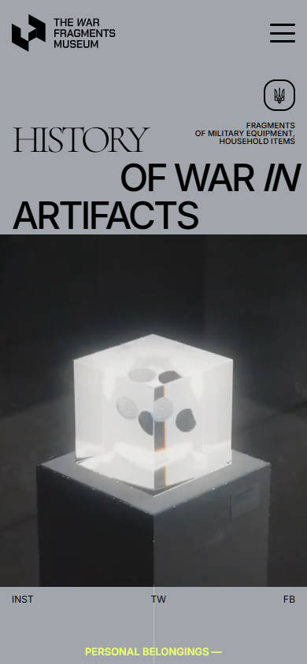
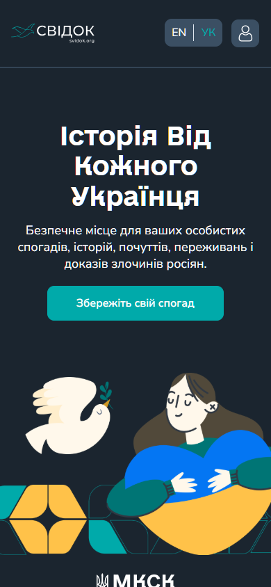
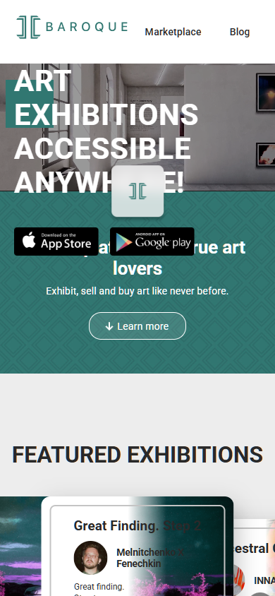
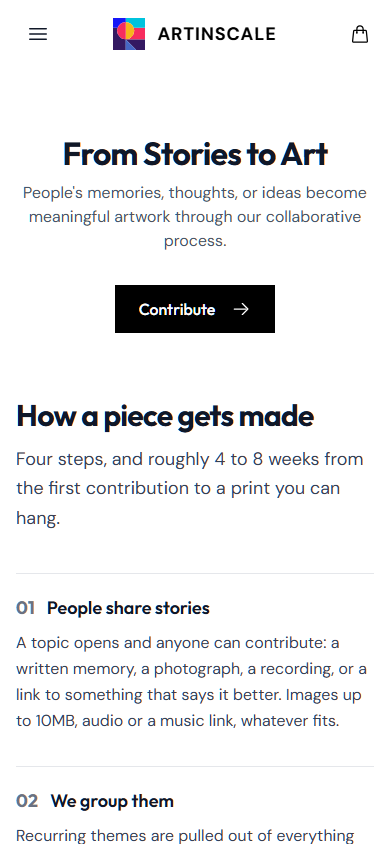
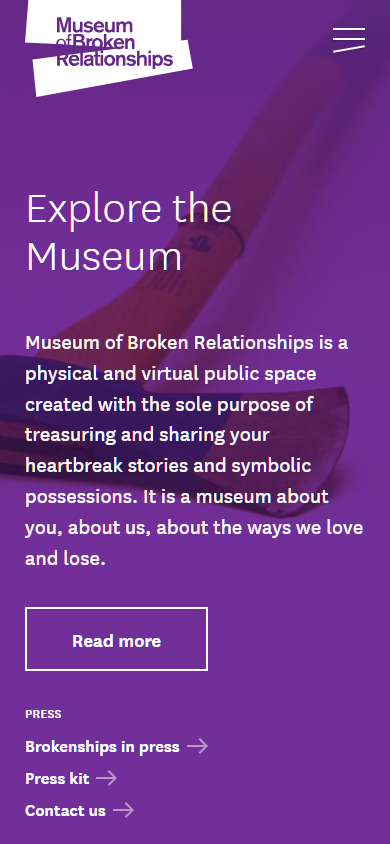

Дослідження Rechovid
Як особиста історія стає видимою поруч із мистецьким відгуком — і що досі не підтверджено для нашого продукту.
Конкуренти
П’ять прикладів із трьох груп: найближчий український аналог, продукти для частин сценарію та міжнародні орієнтири. «Не видно» описує лише відкриті екрани. Вибірка 03 Матриця 04
Таблицю можна прокрутити горизонтально.
| Продукт | Перший екран | Річ → історія → робота | Цінність на вході | Завершення | Мова |
|---|---|---|---|---|---|
| The War Fragments MuseumХардСайт | Гасло про історію війни та відео куба; конкретна історія далі. Скрін | Річ стає об’єктом у кубі. Самостійного додавання відгуку іншого митця не видно. Артефакт | Особиста річ заявлена одразу; досвід людини розгортається на сторінці артефакту. Історія | Куб і розповідь; у прикладі є аукціон. Скрін | Англійська. Скрін |
| Svidok.orgСофтСайт | Заклик зберегти спогад; мистецьких робіт немає. Скрін | Запис або диктування спогаду. Власний запис вимагає акаунта: доступ обмежений. FAQ | Безпечне місце для пам’яті заявлене; зв’язок із митцем не заявлений. Скрін | Публічна нотатка без видимого мистецького відгуку. Нотатки | Українська, перемикач UA/EN. Скрін |
| BAROQUEСофтСайт | Відео виставки та доступ до мистецтва звідусіль. Скрін | Сайт веде до AR-застосунку; повний сценарій там — доступ обмежений. Завантаження | Цінність перегляду мистецтва видно, почута історія оповідача не заявлена. Скрін | Опис обіцяє виставки, квитки, придбання; фінальний екран — доступ обмежений. Google Play | Англійська. App Store |
| ArtinscaleАспіраційнийСайт | Обіцянка переходу від історій до мистецтва. Скрін | Внески до теми → спільний бриф → робота. Відкритих тем 0: доступ обмежений. Теми | Зв’язок видно одразу; індивідуальне визнання пояснено нижче. Процес | Робота з історією створення в каталозі; купівля не обов’язкова. Процес | Англійська. Скрін |
| Museum of Broken RelationshipsАспіраційнийСайт | Запрошення дослідити музей; речі та історії нижче. Скрін | Подання речі та історії веде до входу: доступ обмежений; роботи-відгуку не видно. Share | Значення речей зрозуміле; «You are not alone» з’являється на Share. Скрін | Експонат об’єднує образ речі, назву, місце, період та історію. Експонат | Англійська в навігації. Скрін |







Спільні патерни ринку
- На вході — тема або обіцянка; конкретна історія відкривається далі. War Fragments Svidok
- Перегляд відкритий, участь часто вимагає входу, відкритої теми чи застосунку. Artinscale Museum
- Результат подано як окремий артефакт, нотатку, роботу або експонат. Артефакт Експонат
Відмінності для Rechovid
- War Fragments має одну кураторську форму куба; у Rechovid можливі різні готові роботи. Куб Бриф
- Artinscale збирає багато внесків у спільний бриф; Rechovid пов’язує роботу з конкретною історією. Процес Бриф
- Svidok і Museum завершують шлях історією чи експонатом, BAROQUE починає з виставки; Rechovid досліджує відгук на особисту історію. Матриця Бриф
Бенчмарк
Порівняння з іншими нішами допомагає побачити, як продукти роблять відповідь конкретної людини помітною. Оцінка семи критеріїв
Вимір — видимість адресного відгуку. Людина має зрозуміти, хто може почути саме її історію, як вона пов’язана з відповіддю і що свідчить про відгук. Джерело
| Продукт | Що робить відгук видимим | Межа для Rechovid |
|---|---|---|
| StoryCorps Connect | Співрозмовники записують одну розмову, де чути обидва голоси. Процес | Синхронна розмова потребує узгодженої участі двох людей; у брифі Rechovid відгук добровільний і може бути доданий пізніше. Бриф |
| Storyworth | Історію надсилають обраним близьким; вони можуть відповісти. Доступ | Це приватний родинний обмін, а Rechovid планує публічний перегляд погоджених історій і робіт. Бриф |
| Postcrossing | Одержувач реєструє листівку за ID, відправник отримує підтвердження та можливе повідомлення. FAQ | Взаємність вбудована в правило обміну картками; творчий відгук не можна гарантувати. Правило Бриф |
| Artinscale | Роботу супроводжують історією створення й поясненням впливу внесків. Процес | Кілька внесків стають одним брифом; Rechovid має зберегти конкретний зв’язок однієї історії з роботою. Процес Бриф |
Три механізми для MVP
- Показати пару на вході. «Історія людини → робота митця» пояснює шлях одразу, як це робить Artinscale для внеску й твору. Відгук у Rechovid добровільний. Artinscale Бриф
- Залишити початок і відповідь разом. Річ, історія, робота та коротке пояснення митця дають змогу побачити, на що саме він відгукнувся. Бенчмарк
- Назвати людей і погодити показ. Підписи оповідача та митця й узгоджені межі публікації роблять участь конкретною; згоди учасників пілота ще не перевірені. Storyworth Бенчмарк Дані не підтверджені.
Не переносити: обіцянку гарантованої відповіді за зразком Postcrossing. Там отримання картки є частиною правил обміну; мистецький відгук у Rechovid добровільний. Postcrossing Бриф
Патерни
Дані не підтверджені. У нотатках дослідження немає результату кроку 06, тому обраний патерн ключової задачі й причина вибору для Rechovid не встановлені.
Бриф описує шлях «річ → історія → готова робота», але сам по собі не визначає патерн інтерфейсу. Бриф Синтез
Висновки
Це гіпотези для перевірки, а не встановлені результати. Походження кожної прогалини позначене в останньому стовпці. Повні формулювання
| Прогалина | Гіпотеза | Підстава |
|---|---|---|
| На перших екранах часто не видно конкретної пари «історія → відгук». Матриця | Ясна пара на вході допоможе глядачеві зрозуміти продукт без очікування гарантованої відповіді. Бенчмарк | Конкуренти + бенчмарк. Синтез |
| Історія й робота часто подані окремо або зведені в колективний бриф. Матриця | Річ, історія, робота й пояснення на одній сторінці зроблять зв’язок зрозумілішим. Бенчмарк | Конкуренти + бенчмарк. Синтез |
| Пряме самостійне додавання відгуку до конкретної історії не підтверджено у перевірених публічних сценаріях. Матриця | Якщо підготовлена пара викличе відчуття зв’язку, наступним тестом стане самостійне подання. Дієвість відкритого сценарію — дані не підтверджені. Синтез | Конкуренти + бенчмарк; патерн 06 — дані не підтверджені. Патерни |
| Для особистих історій важливі межі видимості й атрибуції. Бенчмарк | Погоджені матеріали й підписи допоможуть учасникам оцінювати показ без невизначеності щодо авторства. Готовність дозволів — дані не підтверджені. Синтез | Бенчмарк + конкуренти. Синтез |